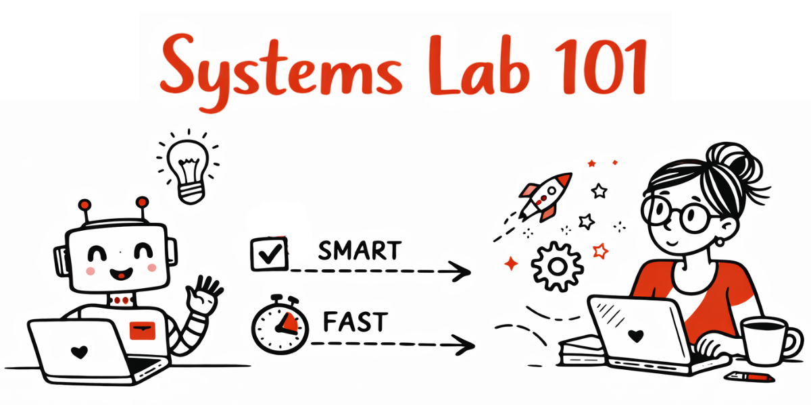

Build simple systems with AI and Canva in minutes
Systems Lab 101 is a live lab where I test workflows for AI, Canva, and everyday tasks, and share what actually works.
Landing page in 5 min · App deployed in 30 min · Repeatable Canva workflows
Follow along, test it yourself, and use what works.
Read past experiments →